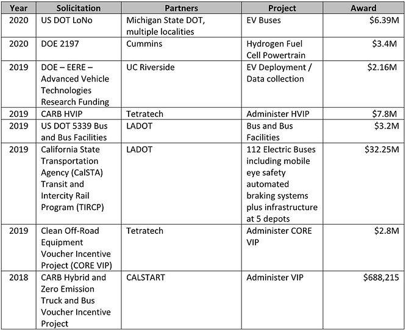
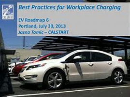
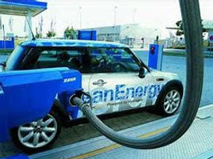

CASE STUDIES
CALSTART
Grant Management Associates (GMA) has been supporting CALSTART and its transportation industry partners with grant application research and development for almost a decade. CALSTART is a nonprofit organization working nationally and internationally with businesses and governments to develop clean, efficient transportation solutions.
n working with CALSTART, GMA typically provides overall management of the grant development process and leads the team of writers and contributors from the various partner organizations. GMA provides guidance on structuring projects to hit all key solicitation requirements and desired outcomes. GMA provides recommendations on tasks, partnering and budget allocations and elicits client input with which to craft a compelling narrative that hits as many of the criteria points as possible.

Over our long relationship with CALSTART we have helped them to raise over $50M for various projects. The table below provides a sample of some recent CALSTART projects for which GMA has developed successful grant applications:

K2 Development Companies / City of Redding / McConnell Foundation
GMA served as grant consultant and prepared two large winning grant proposals for the City of Redding and its partners.
In June of 2018, the Affordable Housing and Sustainable Communities (AHSC) competitive grant program through the state of California’s Strategic Growth Council (SGC) cited three types of projects that were recommended for funding. This Redding Block 7 Net Zero Housing & Downtown Activation Project was the highest point-scoring project of its type in the state. This Integrated Connectivity Project (ICP) type had the highest number of competitive proposals (28) and Redding scored 88 out of 100 total points. In addition, Redding’s project proposal was recommended for the third largest dollar amount in the state, $19,959,536.
This winning proposal is for a mixed used development in downtown, offering housing and transportation amenities, such as completing the river trail connection from Turtle Bay Exploration Park to downtown, was a joint submission by K2 Land and Investment, LLC (K2), The McConnell Foundation (McConnell), the City of Redding, Shasta Regional Transportation Agency and Community Development and Revitalization Corporation (CDRC).
This 2018 grant award builds on the momentum for the revitalization of Redding already underway with the joint effort between K2 Land and Investment and the City of Redding. With grant writing support from GMA, these two entities were successfully awarded $20,000,000 also from the Affordable Housing and Sustainable Communities Program from the Strategic Growth Council in 2017. This AHSC grant is for the Redding Downtown Loop and Affordable Housing Project. GMA prepared both grant applications as the grant consultant to the project.
To be awarded two grants of close to $40M for the same region, one after the other, is unheard of. GMA is proud of their leadership in shepherding this through the notoriously difficult Strategic Growth Council process.
Aha Macav Power Service
GMA was contracted to write and submit a utility scale solar grant on behalf of a tribally owned utility in 2019. This annual DOE tribal infrastructure grant is considered one of the more difficult federal grants to win, is highly competitive, and includes 22 separate forms, some of them highly technical.
GMA formed a team of three grant writers under the guidance of Kristin Cooper Carter and was led by Deborah Dowd, one of GMA’s most experienced technical grant writers, with a detailed project management software implementation by GMA’s Ed Ober to track and meet all the requirements and allow all project stakeholders to view the progress of the grant application.
The GMA grant team worked closely with solar electric experts and engineers on the project, as well as the tribe’s utility board of directors, plus testified before the full Tribal Council and worked closely with the utility’s senior staff.
GMA undertook a complete review and detailed analysis of the utility’s rate structure and rate contracts which were essential to winning the grant. In this particular annual grant cycle, the amount of the awards were doubled to $2 million making this grant more competitive. The tribal utility was awarded $2 million. GMA assisted the utility staff in the grant award contracting process, and in the required progress reports and post-award accounting implementation. This solar project was completed in 2020.
Thermalito Water and Sewer District - State of California SRF Loan
The Thermalito Water and Sewer District (TWSD) provides domestic water and sanitary sewer services to the Thermalito area of Oroville. The purpose of the East Trunk line project was to fix and replace the aging sewer line in a disadvantaged community. A successful State Water Resource Control Board – State Revolving Loan Fund Program application funded a $2,700,000 loan to the district, which was prepared by GMA, and consisted of Financials, Legal, Environmental and Technical materials. GMA worked with local engineers to pull the information together. Because the project deployed “green” attributes it allowed the district to qualify for 20% principal forgiveness on the loan - $540,000.
Riverside County – Economic Development Department
Grant Management Associates was involved with the County of Riverside’s Economic Development Corporation’s multi-jurisdictional electric vehicle infrastructure deployment program. This application sought to deploy 24 publicly accessible EVSE Charging units throughout the County in key corridors in support of public charging. The proposal successfully brought in $3.4 M in support of these chargers allowing disadvantaged areas of the county and hard to access reaches an opportunity to participate in the electrification of the vehicle infrastructure. This program coordinated the diverse needs of thirteen key partners, several subcontractors and various local agencies.
AltAir Fuel
Grant Writing Services. After locating and analyzing the funding opportunity for AltAir with a recommendation to pursue, GMA was then retained by AltAir in January of 2014 to prepare a grant application to the California Energy Commission (CEC). The purpose of the grant is to help pay for the costs associated with converting a closed petroleum refinery into a renewable biofuel refinery that produces renewable diesel and renewable jet fuel as well as usable byproducts. The refinery can utilize multiple feedstock types, making it extremely flexible. AltAir sought $5M from the CEC to help with the second stage of the conversion process after the first stage was capitalized privately and was already underway.
GMA assigned a team of 3 experienced grant writers who have previous experience preparing applications for the CEC. Supervisor (Kristin Cooper) provided oversight of the application development process and all resultant documents, including quality control and editing. Team Lead (Ed Ober) provided day-to-day management of the application process, provided much of the writing and organization of the application narrative, development of a complex budget and oversaw the work of the 2nd Chair. 2nd Chair (Emily Symmes) provided support on various sections of the application and was responsible for development of many of the attachments including the greenhouse gas calculations and CEQA compliance. Team Lead managed the assembly of all completed sections into the final document and assembled all attachments and exhibits. Supervisor reviewed and edited the final documents. The Team Lead managed the submission printing, binding and delivery.
There were no significant delays in the project and the application was submitted by the deadline of March 25, 2014. The application was successful and received a notice of award in the amount of $5,000,000 from the CEC in July 2014. The Team Lead participated in the process of adjusting the budget per the CEC’s request. AltAir also elected to utilize GMA to manage this grant award contract.
ChargePoint
ChargePoint is the largest network of Electric Vehicle Supply Equipment (EVSE) in the country with a mission of serving the US and international regions with EV charging capacity. GMA was retained by ChargePoint in October of 2009 to coordinate and apply for a grant with the California Energy Commission for the deployment of Electric Vehicle Supply Equipment (EVSE) for charging electric vehicles (EVs).
The project required the research, cultivation and coordination of 89 site locations and completing and meeting CEQA requirements for each installation location. The project required a match contribution and a detailed budget as well as a thorough narrative and justification for the site locations chosen. This justification required elements of research on the proposed site locations, traffic patterns, penetration of EVs in the area, existing EVSE locations and other demand and use-related data.
The grant application was successful and ChargePoint received three awards for a total of $2.1M, which allowed them to install 114 EVSE charging stations at 89 locations.
El Dorado County
El Dorado County contracted with GMA to help county agencies and local nonprofits bring new funding streams into the area. By providing capacity building, grant research, and grant writing, GMA was able to secure over $800,000 in new funding in the first six months of the program. Projects ranged from disaster mitigation to recidivism reduction to dental health and more.
The step-by-step process that GMA put forth for El Dorado County:
Shovel Ready Workshop and Training: GMA presented an interactive seminar on how to design shovel ready projects, identify available funding, and build strong relationships with key funding agencies.
Open Application Period to Join the Grant Development Program: GMA will invited the workshop attendees to submit a “Shovel Ready Survey” for projects that are ready to receive grant funding. GMA worked within the program budget to provide capacity building, advice, and networking opportunities to all applicants and will help shovel ready projects pursue available funding.
Determine Funding Needs
Funding Identification
Grant Proposal Preparation
This resulted in the following successful applications over a six month period:
* HRSA Mobile Dental Health Grant: $600,000
* El Dorado Integrated County Wildfire Protection Plan: $73,250
* El Dorado County Firewise Education Plan: $50,000
* Logtown LT-10 Fuel Reduction: $219,557
* GF-13 GFFSC Fuel Reduction Project: $135,100
* Lakehills 1 Fuel Reduction and Hazard Removal LH-1: $196,500
* Weber Creek Fuel Reduction Project PP-1: $191,000
* Caswell Road Fuels Reduction and Community Protection: $53,200
Electric Utility Consultant
TCL’s partner, GMA, was retained by Electric Utility Consultants, Inc. (EUCI) in August of 2012 to provide training services to attendants of the workshop.
The training was held in San Francisco at the Hyatt. It was a three day training on the subject of Energy–related Grant Funding and Grant Writing. The program complied with the ANSI/IACET Standards and EUCI was authorized to offer IACET 1.0 CEUs for accreditation units. The attendees were from all sectors; start ups and large corporations.
Kristin Cooper managed the client interactions and delivered the training program. The content for the training program was provided by GMA with Client approval.
GMA generated all of the workshop content and materials. The content came from professional experience and case studies. The material was highly interactive. There was ample time for the participants to share information, obtain feedback and refine their work. GMA uses a lot of examples and gives students’ assignments to work on both separately and together. GMA also prepared handouts for the program to be reviewed concurrent to the session. The course was appropriate for beginners to intermediate writers.
After each section we would spend time actively writing components. Once completed we would review these materials as a group. All of the group members become “reviewers “of each other’s materials. From the session evaluations, this was the most important aspect of the training. After a few section reviews all of the students started to excel with their writing, both in content and transitions.
This training can be easily modified to meet multiple time frames The feedback on the training was positive with negative scores for the temperate of the room. Many of the students followed up with questions directly with GMA after the workshop ended.
Schneider Electric
GMA was retained by Schneider Electric in October of 2011 to perform research services pertaining to electric vehicles. The client’s request included both current news and information about industry trends as well as funding opportunities (both grant and procurement).
Client expanded its scope of services with GMA from primarily the West Coast to all of the U.S. and added to research services liaison with State Agencies and Grant Development and Procurement Services.
The Research Associate signed up to multiple news sources and created multiple alerts for relevant news topics in the industry and business news which provided a regular stream of information in for evaluation. The Research Associate signed up for notifications from multiple relevant funding agencies. The Research Associate reviewed all incoming notifications for relevance and also actively reviews relevant agency websites for opportunities not notified via email. Where relevant information was discovered, the Associate dug deeper for additional relevant details such as companies, names, funding amounts, eligibility requirements, due dates for applications and other important details. The Research Associate forwarded all relevant notification, opportunities and details obtained to the Client’s distribution list.
The Client opted to pursue a grant opportunity that arose from this research and utilized GMA to prepare the application, which was successful and received two awards for $140,000 and $45,500 in March of 2013. GMA then assisted Schneider in the fiscal management of these contracts.
These are ongoing assignments with this Client. Because the Client has been pleased with the services provided thus far, the scope of the research for this Client has recently been expanded from primarily the West Coast to all of the United States and also expanded from strictly research services to also Liaison with State Agencies, Grant Development and Procurement Services. A Senior Associate consultant has been added to the team to provide these additional services.